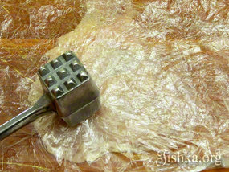
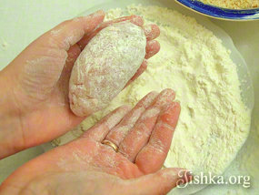
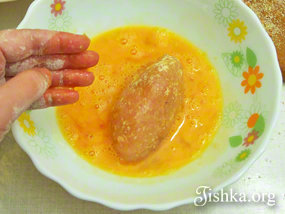

Котлеты по-киевски известны всем и, наверняка, многие имеют хотя бы теоретическое представление о сложности технологии их приготовления, благодаря которой, отчасти, это блюдо и овеяно некоторой тайной. Предлагаю немного приподнять таинственную завесу и взглянуть на процесс приготовления этого блюда не так стандартно.
Итак, известно (это показывают во всех кулинарных передачах), что самая настоящая, классическая котлета по-киевски по всем строгим канонам готовится из цельной куриной грудки — она отделяется от неразделанной курицы вместе с крыльевой косточкой, которую в конце увенчает изящная бумажная папильотка. Затем филе хорошенько отбивается, в него укладывается кусочек сливочного масла и закрывается «малым» филе, отделенным от основного и все это заворачивается плотным рулетом, дважды панируется белыми сухарями и хорошенько обжаривается во фритюре. Все. Теперь самая главная задача для нашего изделия, чтобы масло не вытекло ведь именно по этому параметру будет оцениваться удалась или нет котлета по-киевски.

Так да не так. Если открыть любую старую книгу по кулинарному искусству, например, авторитетную «сталинскую» Кулинарию 1955 года, в раскладке граммов для блюда «Котлета по-киевски» указано количество куриного филе 80г и при этом описана технология снятия цельного филе с крыльевой косточкой. Все, кто готовил что-то наподобие знают, что котлета по-киевски всегда огромная и весит не меньше 300г, откуда тогда вес филе 80г ? И что же это за размер, если любая сырая куриная грудка, которую мы можем встретить в магазине, весит не меньше 200г. Ошибка? Не думаю. Вероятно, причина кроется в истории возникновения блюда, ведь по одной из версий идея котлет была почерпнута из рецепта французской котлеты «де-валяй», ее готовили очень похоже и также фаршировали сливочным маслом (но с шампиньонами), приготавливали же ее из филе цыпленка, которое вполне могло весить около 80г, в американской версии названия наших котлет есть даже намек на это — «Chicken Kiev». Значит, «настоящая» котлета по-киевски готовится из цыпленка, но что же делать, если в нашем арсенале лишь тушки бройлера?
Существует технология, по которой в современных ресторанах и общепитах готовится котлета по-киевски массой всего 120-140г и при этом из самого обычного филе. Дело в том, что сейчас принято использовать лишь часть грудки, обрезанной до 80-100г, крыльевую же косточку (совсем от другой курицы) вставляют отдельно. Классической формой для котлеты по-киевски является форма шишки — скругленная с одного конца и остроконечная с другого. С острой стороны может выглядывать крыльевая косточка, специально завернутая вместе с кусочком масла в котлету, на нее одевается папильотка
В этом мастер-классе я покажу как приготовить котлету по-киевски по профессиональной технологии в условиях домашней кухни. Делать мы будем котлету овальной формы и без вставки косточки, рецепт ресторанный, но адаптирован к нормальной домашней кухне, где у хозяйки наверняка не найдется лишних крыльевых косточек от других кур в морозилке. Это будут небольшие котлетки, изящные, размером с половину ладони и массой на выходе 100 г. Рецепт не рекомендую новичкам, однако, если все сделать правильно масло не вытечет и котлеты получатся удачными даже с первого раза. Главное не пренебрегать ни одной технологической операцией.
Котлеты по-киевски практически не приправляются, в дни их создания куриное филе считалось деликатесом, вкус которого не нужно перебивать, поэтому солить и перчить следует очень слегка. В сливочное масло обычно ничего не добавляется, но допускается смешивать масло с зеленью. Котлета подается на маленькой греночке — крутоне, которая при разрезании впитает растопленное сливочное масло.
Ингридиенты:
Ингридиенты для 6 котлет:
- 3 сырые куриные грудки
- 60 г сливочного масла
- 2 сырых яйца
- 200 г панировочных сухарей
- 6 ст.л. муки
- соль, свежемолотый черный перец
- 1 л рафинированного растительного масла без запаха
- Каждую куриную грудку вымыть, зачистить от жира и убрать остатки костей и хрящей. Если у Вас есть весы взвесьте зачищенные филе. Обычно одно филе бройлера весит 250г.
- Из каждого филе мы получим 2 котлеты. Необходимо, чтоб мясная заготовка для каждой котлеты весила 80г (можно принять и другой вес, например, 100г). Если грудка весит 250 г, мы готовим из нее 2 котлеты по 80г на сырую заготовку, нам надо срезать 90г филе (250-(80+80)=90). Филе с неровной рыхлой нижней части для котлет менее всего пригодно — им и пожертвуем. Необходимо прижать грудку ладонью сверху и срезать 1/3 часть снизу. Нижняя часть в приготовлении не понадобится (ее можно использовать для других блюд). Вес гладкой верхней части должен быть не менее 160г (80г+80г).
- Формируем заготовки для 2-х котлет. Разрезаем грудку поперек на 2 равные части. Каждый кусок должен весить примерно 80г.
- Накрыть каждый кусок пленкой. 
- Отбить молоточком до толщины 5 мм.
- Посолить (1 маленькая щепотка соли), слегка поперчить. Приправляется только одна сторона.
- Масло (60г) разрезать на 6 брусков (для 6-ти котлет).
- Теплом рук сформировать из брусков масла продолговатые овальные «котлетки».
- Масляные заготовки кидаем в миску с холодной водой для закрепления формы.
- Формируем котлеты по-киевски: Выложить мясную заготовку гладкой стороной наверх. Важный момент: рыхлая сторона лучше панируется чем гладкая, на рыхлую сторону сухари прилипнут лучше, поэтому гладкую сторону заворачиваем внутрь, рыхлую — наружу.На край выложить овальный сливочный брусочек.
- Подворачивая края так чтобы они закрыли масло начинаем заворачивать мясную отбивную рулетом.
- Масло должно быть полностью закрыто мясом — иначе может вытечь при жарке.
- Должен получится рулетик.
- Мокрыми руками сжимаем рулетик ладонями так чтобы из него вышел лишний воздух. Сжимать надо аккуратно, плотно, но без особых усилий. Эта процедура делается, чтобы при жарке котлеты не разворачивались, не всплывали во фритюре и равномерно прожаривались.
- Такая котлетка должна получится.
- Выкладываем котлеты на плоскую тарелку или дощечку и отправляем в холодильник на 30-40 минут, они должны хорошенько остыть.
- Через пол часа подготавливаем яичный льезон: яйца вылить в миску. Посолить (2 маленькие щепотки соли).
- Перемешать вилкой.
- Котлеты по-киевски панируют по схеме: мука-яичный льезон-сухари-яичный льезон-сухари. Для панировки котлет подготовить плоскую тарелку с мукой, мисочку с панировочными сухарями, тарелку с яичным льезоном, доску обсыпанную панировочными сухарями для выкладывания запанированных котлет. 
- Сухими руками хорошенько обвалять каждую котлетку в муке. 
- Затем окунуть в яичный льезон.
- Обсушить руки. Обвалять котлеты в сухарях.
- Окунуть снова во взбитые яйца.
- Обсушить руки. Окончательно обвалять в сухарях.
- Выложить на доску. Остудить котлеты, отправив в холодильник на 30 минут. Если планируете приготовить котлеты позже — в состоянии полуфабриката котлеты могут храниться в холодильнике до 12 часов. Вы можете все подготовить утром и поджарить котлеты к вечеру.
- В подходящую кастрюлю (она должна быть толстостенная, широкая, так чтобы не соприкасаясь могли одновременно жарится 3 котлеты) вылить 1 л рафинированного масла для жарки (без запаха). Слой масла должен быть таким, чтобы покрыть котлеты полностью, т.е. не меньше 8 см. Хорошенько нагреть масло до температуры 140 С. Проверить температуру можно кинув хлебную крошку — если она запузырилась масло хорошо нагрето.
- При помощи шумовки аккуратно выложить котлеты в хорошо разогретое масло. Работа с раскаленным фритюром опасна! В горячее масло не должна попасть вода иначе будет брызгать во все стороны. Аккуратно с рядом бродящими родственниками и котами, чтоб не было ожогов!
- На среднем огне обжарить 6 минут (при условии, что котлеты небольшие, до 120г). Можно проверить готовность, надрезав кончик первой котлеты: если мясо сыровато увеличьте длительность обжарки на пару минут. Слишком долгой обжаркой можно пересушить котлету и мясо потеряет сочность и нежность.
- Аккуратно достать готовые котлеты шумовкой.
- Выложить на блюдо.
- Подавать на маленькой греночке-крутоне или с гарниром, например с картофельным пюре. Приятного аппетита!